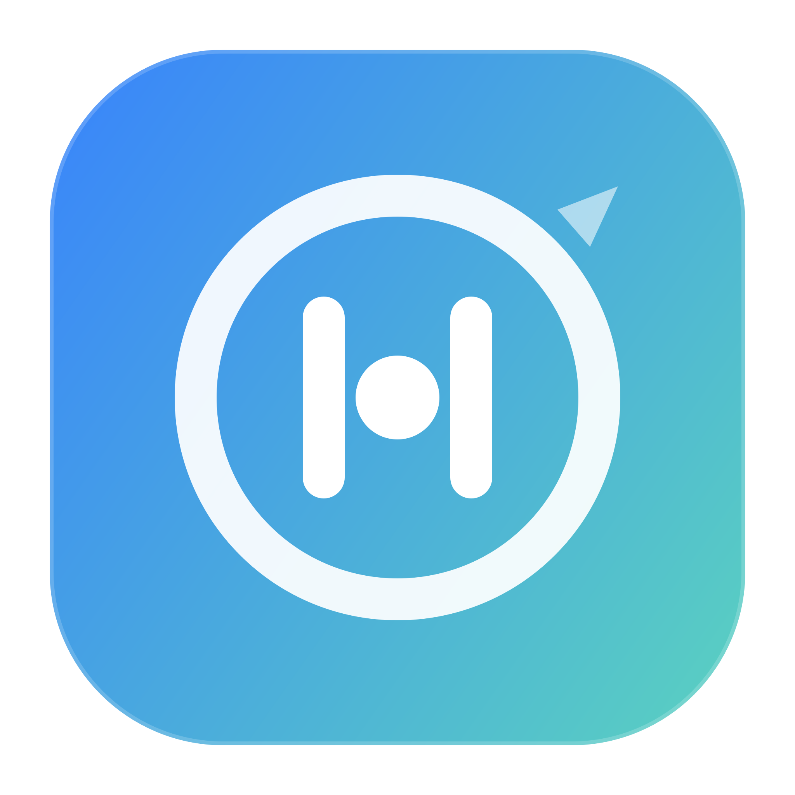

Grace first
Quick, purposeful visits stay uninterrupted.

StillPoint Download macOSMenu bar attention guardian · macOS
StillPoint lives in your menu bar and asks for intent before a quick check becomes doomscrolling.
Current gate
Douyin 0s / 8s com.ss.iphone.ugc.AwemeWhy it exists
Quick, purposeful visits stay uninterrupted.
When a feed starts pulling, StillPoint asks for one deliberate choice.
Review protected time once, without per-exit nagging.
How it works
StillPoint watches selected apps, keeps a short grace window, and switches to a stronger gate during Deep Work Lock.
Douyin, Bilibili, Xiaohongshu, or any app you add later.
Looking something up, taking a break, or closing the drift.
Deep Work Lock covers build waits, agent waits, and context switches.
Open source preview
StillPoint is an early SwiftUI prototype. It is local-first, menu-bar-first, and designed to move toward Android after the macOS demo proves the loop.